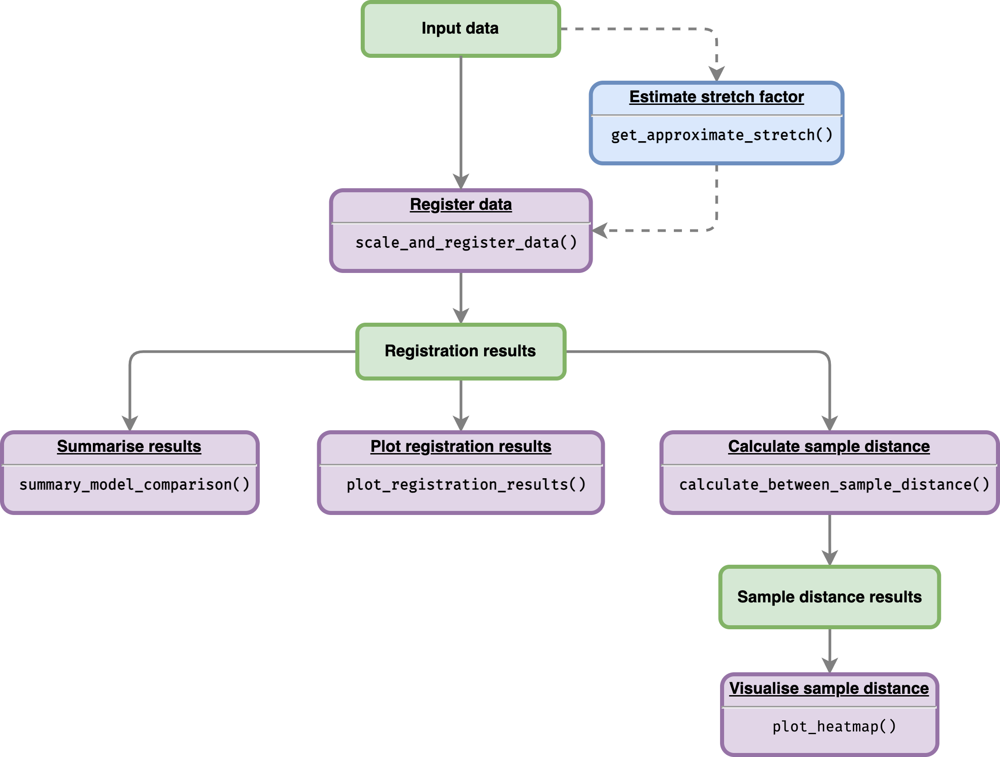

Overview
The goal of GREAT (Gene Registration from Expression and Time-courses) to register (align) gene expression profiles between two species (reference data and data to transform). Non-reference gene expression profiles will be stretched and shifted. The optimality of registration parameters (shifts and stretches) will be estimated using least-squares criterion. This package is also designed to compare a registration model versus a non-registration model, as well as determine whether registration model performed better than non-registration transformation.
Package workflow
Flowchart below illustrates the workflow of the package given an input data:

More details on how to use this package are available on functions documentations and vignettes:
Installation
And the development version of GREAT from GitHub with:
# install.packages("devtools")
devtools::install_github("ruthkr/GREAT")Usage - quick start
This is a basic example which shows you how to register (align) gene expression profiles over time:
# Load the package
library(GREAT)
# Define the dataframe from the sample data
# Gene expression data with replicates
all_data_df <- system.file("extdata/brapa_arabidopsis_all_replicates.csv", package = "GREAT") %>%
utils::read.csv()
# Running the registration
registration_results <- scale_and_register_data(
input_df = all_data_df,
stretches = c(3, 2.5, 2, 1.5, 1),
shift_extreme = 4,
num_shifts = 27,
min_num_overlapping_points = 4,
initial_rescale = FALSE,
do_rescale = TRUE,
accession_data_to_transform = "Col0",
accession_data_ref = "Ro18",
start_timepoint = "reference"
)
#>
#> ── Information before registration ─────────────────────────────────────────────
#> ℹ Max value of expression_value of all_data_df: 262.28
#>
#> ── Analysing models for all stretch and shift factor ───────────────────────────
#>
#> ── Analysing models for stretch factor = 3 ──
#> ✓ Calculating score for all shifts (10/10) [2s]
#> ✓ Normalising expression by mean and sd of compared values (10/10) [55ms]
#> ✓ Applying best shift (10/10) [50ms]
#> ✓ Calculating registration vs non-registration comparison AIC & BIC (10/10) [134ms]
#> ✓ Finished analysing models for stretch factor = 3
#>
#> ── Analysing models for stretch factor = 2.5 ──
#> ✓ Calculating score for all shifts (10/10) [2.2s]
#> ✓ Normalising expression by mean and sd of compared values (10/10) [55ms]
#> ✓ Applying best shift (10/10) [52ms]
#> ✓ Calculating registration vs non-registration comparison AIC & BIC (10/10) [113ms]
#> ✓ Finished analysing models for stretch factor = 2.5
#>
#> ── Analysing models for stretch factor = 2 ──
#> ✓ Calculating score for all shifts (10/10) [2.2s]
#> ✓ Normalising expression by mean and sd of compared values (10/10) [47ms]
#> ✓ Applying best shift (10/10) [50ms]
#> ✓ Calculating registration vs non-registration comparison AIC & BIC (10/10) [99ms]
#> ✓ Finished analysing models for stretch factor = 2
#>
#> ── Analysing models for stretch factor = 1.5 ──
#> ✓ Calculating score for all shifts (10/10) [2s]
#> ✓ Normalising expression by mean and sd of compared values (10/10) [51ms]
#> ✓ Applying best shift (10/10) [52ms]
#> ✓ Calculating registration vs non-registration comparison AIC & BIC (10/10) [102ms]
#>
#> ✓ Finished analysing models for stretch factor = 1.5
#>
#> ── Analysing models for stretch factor = 1 ──
#> ✓ Calculating score for all shifts (10/10) [1.9s]
#> ✓ Normalising expression by mean and sd of compared values (10/10) [49ms]
#> ✓ Applying best shift (10/10) [49ms]
#> ✓ Calculating registration vs non-registration comparison AIC & BIC (10/10) [108ms]
#> ✓ Finished analysing models for stretch factor = 1
#>
#> ── Model comparison results ────────────────────────────────────────────────────
#> ℹ BIC finds registration better than non-registration for: 10/10
#>
#> ── Applying the best-shifts and stretches to gene expression ───────────────────
#> ✓ Normalising expression by mean and sd of compared values (10/10) [48ms]
#> ✓ Applying best shift (10/10) [52ms]
#> ℹ Max value of expression_value: 9.05
#> ✓ Imputing transformed expression values (10/10) [144ms]
#> Reference
Calderwood, A., Hepworth, J., Woodhouse, … Morris, R. (2021). Comparative transcriptomics reveals desynchronisation of gene expression during the floral transition between Arabidopsis and Brassica rapa cultivars. Quantitative Plant Biology, 2, E4. doi:10.1017/qpb.2021.6